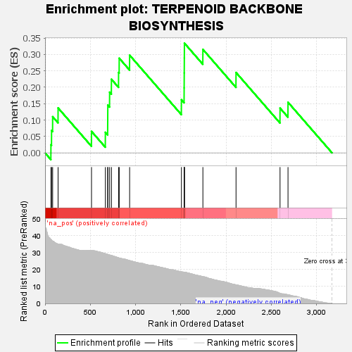
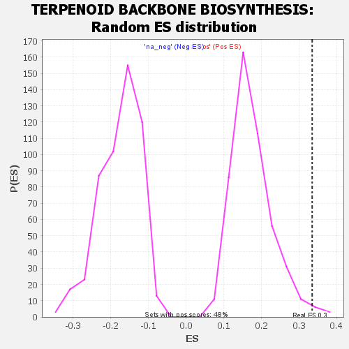

| | | Dataset | GSEA RNK clr Maaslin2 MucosalvsLuminal KO - SI.rnk |
| Phenotype | NoPhenotypeAvailable |
| Upregulated in class | na_pos |
| GeneSet | TERPENOID BACKBONE BIOSYNTHESIS |
| Enrichment Score (ES) | 0.3347003 |
| Normalized Enrichment Score (NES) | 1.9056927 |
| Nominal p-value | 0.0125 |
| FDR q-value | 0.027409462 |
| FWER p-Value | 0.363 |
Table: GSEA Results Summary

Fig 1: Enrichment plot: TERPENOID BACKBONE BIOSYNTHESIS
Profile of the Running ES Score & Positions of GeneSet Members on the Rank Ordered List

Fig 2: TERPENOID BACKBONE BIOSYNTHESIS: Random ES distribution
Gene set null distribution of ES for TERPENOID BACKBONE BIOSYNTHESIS